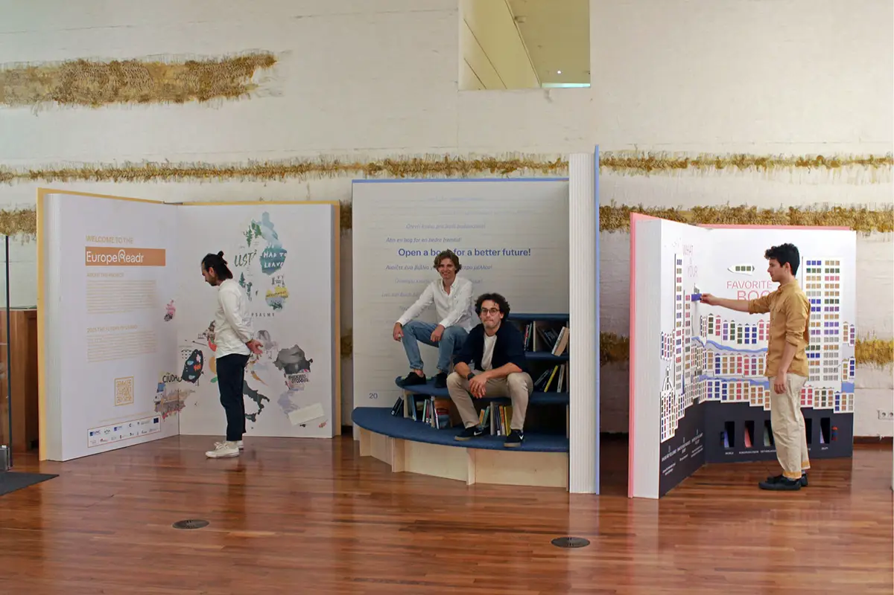
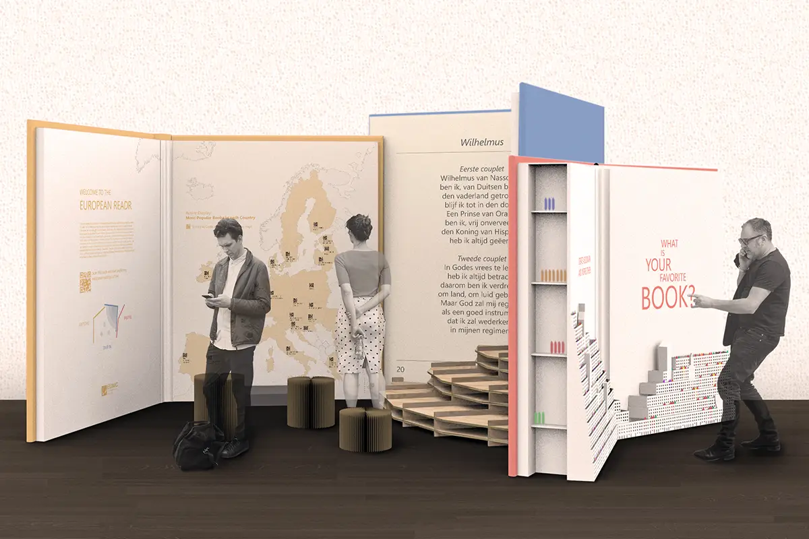
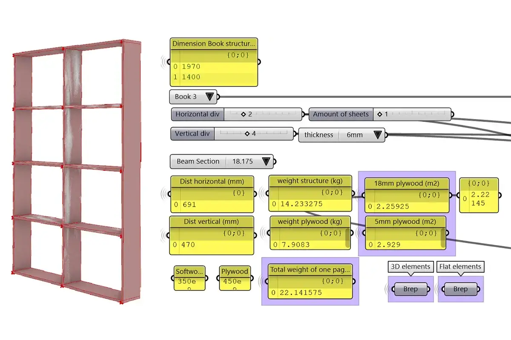
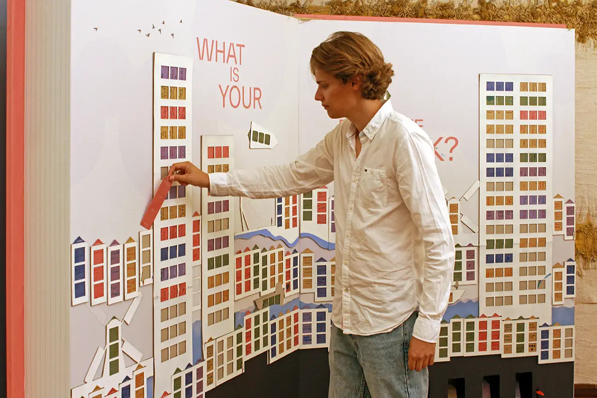

Design Competition 2021
Team: Christopher Bierach, Thomas Lindemann, Dimitrios Ntoupas
Client: EUNIC Netherlands
File-to-Factory Processes Digital FabricationThe European Readr is an initiative of the European Union to harvest interest in culture across Europe. Each country was challenged to contribute a project to the theme of 2021: „Open a book for a better future“. EUNIC Netherlands created a student competition, which we could win with our proposal. Our concept reacts to the idea of reading by creating three over-dimensioned books, each serving a specific task. The first book, „Inspire“, offers visitors to download books that are offered for free by the partner initiatives of all countries of the EU. The second book, „Dive In“, offers a space to sit down and read. Finally, the third book, „Inspire“, challenges the visitors to leave book recommendations on colourful bookmarks in an imaginary landscape of the Netherlands.
Once the competition was won, we developed a realization concept to build the pavilion within the material budget of 10.000 EUR. Thanks to being able to use the facilities of the Faculty of Architecture at TU Delft, we constructed the books from timber profiles and plywood sheets. The rounded shape of the podium was achieved through CNC milling, and the book pages and envelopes were produced by a specialized printing company. The pavilion was constructed for easy disassembly, so it could be exhibited in multiple locations. After construction, the pavilion was exhibited at OBA Amsterdam, Biblionet Veendam, Emmen and Delft.